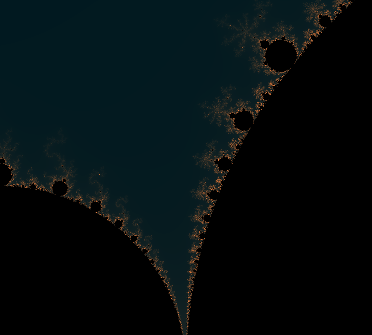
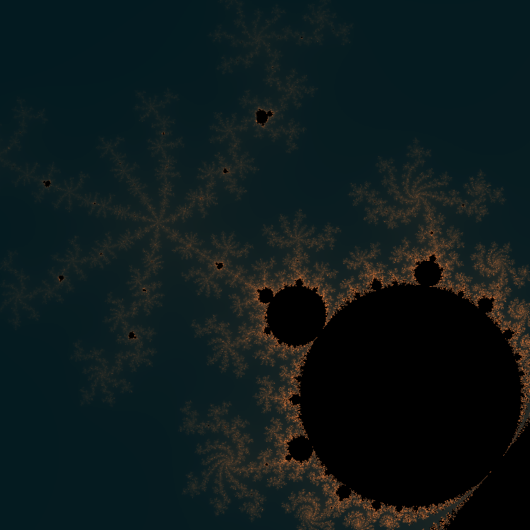

Per saperne di più sull'insieme di Mandelbrot, si può consultare la pagina Wikipedia
Si può scaricare un esempio di programma che genera un frattale di Mandelbrot colorato: colorful_mandelbrot.py
Il numero di iterazioni (max_iterations) è stato aumentato a 512 per migliorare la precisione del disegno, a discapito del tempo di esecuzione più lungo.
Il colore viene calcolato in base a quanti passi servono per capire se appartiene o meno all'insieme di Mandelbrot.
In questo caso si usa un'interpolazione lineare da un colore di partenza blu scuro (rgb: 32, 25, 32) ad arancione (252, 131, 61).
Nel caso servano pochi passi, il fattore di interpolazione a = passi/max_iterations sarà vicino a 0, e il colore risultante blu scuro: questo
si vede nei punti lontani dal dominio dell'insieme di Mandelbrot. Vicino al bordo invece servono più passi per capire se il punto è dentro l'insieme
o no, quindi a sarà vicino a 1 e per questo si hanno tonalità verso l'arancione sui margini del frattale.
Con -1.0 <= x <= -0.5 e 0.05 <= y <= 0.5 
Con -0.7 <= x <= -0.6 e 0.4, <= y <= 0.5 
Sebbene ancora piuttosto scarno, un gioco dell'impiccato più completo: impiccato2.py